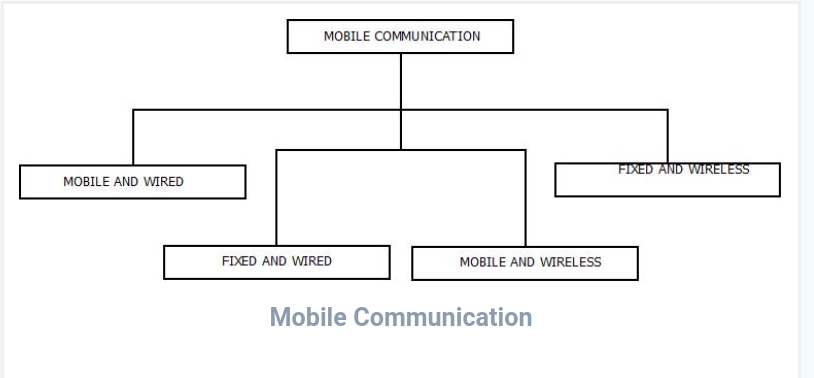

Mobile Communication is the framework that is responsible behind the working of mobile computing technology.
It ensures the consistency and reliability of communication process through this framework.
Mobile communication framework includes communication devise such as mobiles, laptops, as rules of conduct, fitness etc. They are responsible for delivering of smooth communication process.
Mobile communication can be of one of the following form as mentioned below.
| Mobile and Wired | Fixed and Wired | Mobile and Wireless |
|---|---|---|
| In this configuration, Some of the devices are wired and some are mobile in nature. | In this configuration, The devices are fixed at a position and are connected through a physical link for communication. | In this configuration, devices can communicate(data transmission) with each other irrespective of their position and can connect to any network without the use of any wired device. |
| For Example : Laptops. | For Example : Office/Desktop Computer. | For Example : WiFi Dongle. |